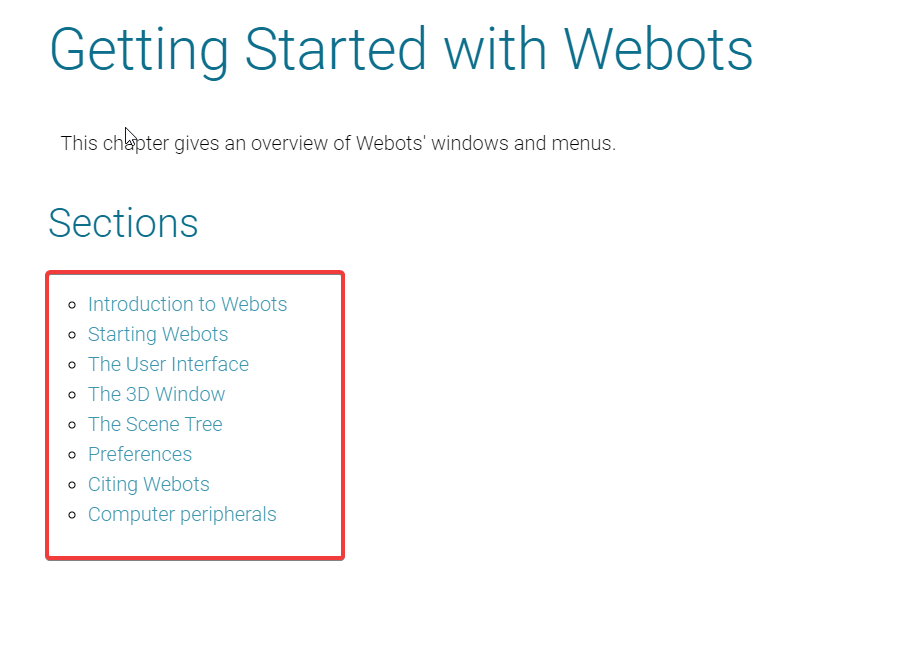

Webots User Guide <<
Previous Getting Started with Webots
在我負責之部分第一項目首先講解到如何開始使用Webots的畫面與視窗，雖然這整本電子書都是在解說Webots介面使用，但在實際使用方面卻有所差別，以下為首要大略提到的標題及小標題的重點與補充說明。
章節一；開始操作Webots
目錄:
介紹Webots
原文重點:
1-It offers a rapid prototyping environment, that allows the user to create 3D virtual worlds with physics properties such as mass, joints, friction coefficients, etc.
2-The user can add simple passive objects or active objects called mobile robots. These robots can have different locomotion schemes (wheeled robots, ，legged robots, or flying robots).
3-Webots is well suited for research and educational projects related to mobile robotics.
4-even if you don't know these languages, you can still program the e-puck and Hemisson robots using a simple graphical programming language called
5-If you don't want to use existing robot models provided within Webots and would like to create your own robot models, or add special objects in the simulated environments, you will need a basic knowledge of 3D computer graphics and VRML97 description language.
6- A world file doesn't contain the controller code of the robots; it only specifies the name of the controller that is required for each robot.
7-it can execute operations that can normally only be carried out by a human operator and not by a real robot.
中文概略解說:
提供模擬環境，使用戶可創建物理特性(質量、摩擦係數等等)的3D虛擬世界，可添加各種不同輪型、飛行等機器人在景象中，且配備感測器、執行設備等(攝像機、馬達、接收器等)，也可對機器人做單獨編程。
包含大量機械人模型與程式控制器範例包(可將程式轉移到e-puck，DARwIn-OP等真實機器人)，以幫助用戶熟Webots 。
Webots在機器人技術上有一定程度的依靠，例如:移動機器人原型製作、多主體研究、教授機器人技術、機器人競賽等等涉略範圍。
即使不知道python、c++、java等程式編碼的知識，依然可以使用BotStudio程式編碼器對機器人編輯。
如果不喜歡模組中原有的機器人範例包，也可另外使用3D、VRML97描述語言的程式來創建模型並導入。
Webots模擬組成條件:
1-.wbt副檔名，定義多個既器人與環境，取決於外部(proto)，檔案儲存在每個Webots項目裡worlds子目錄中。
2-在c++可進行修改可選之物理插件。
3-機器人都由程式控制程序組成(python、c++、java)。
4-對於環境中物件之方向、位置、形狀、顏色、亮度會仔細編輯。
5-關節本身包含一個攝像頭，但World文件不包含機器人控制器代碼，只有指定每個機器人所需控制器名稱。
管理者可執行是因為操作者正在執行的關係，並不是由機器人執行操作，適合任何編碼語言，但與常規控制器來說管理者將有權使用特權操作(包含模擬控制)。
開始Webots之操作
使用者介面
3D視窗
情景樹
優先選項
Webots傳訊
電腦設備
Webots User Guide <<
Previous